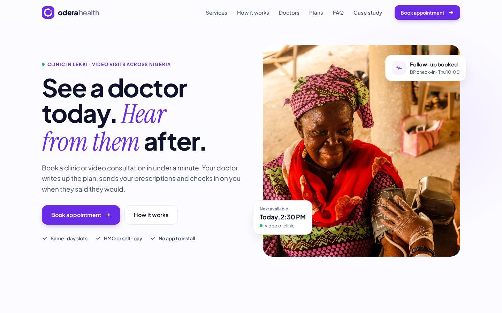
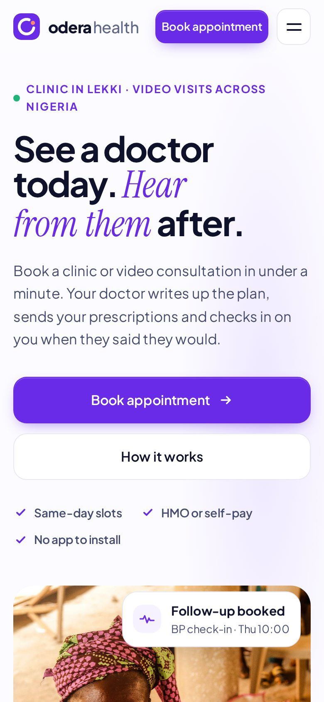
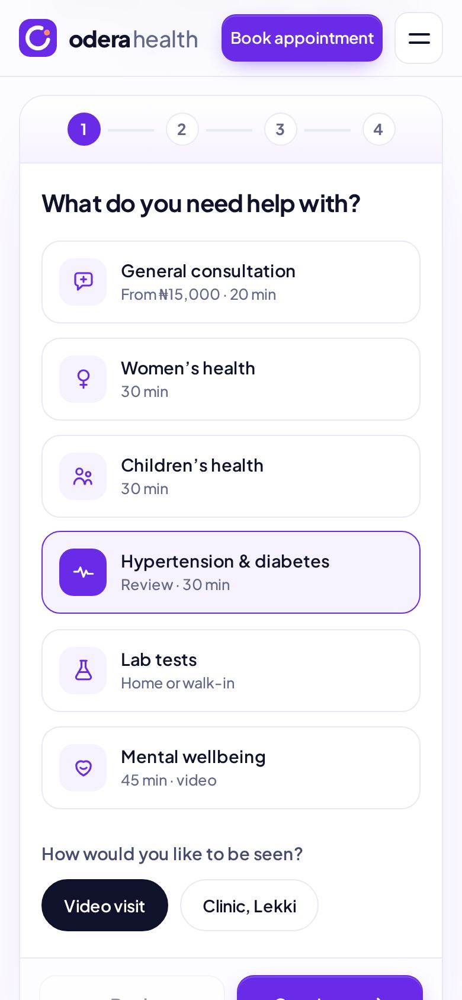
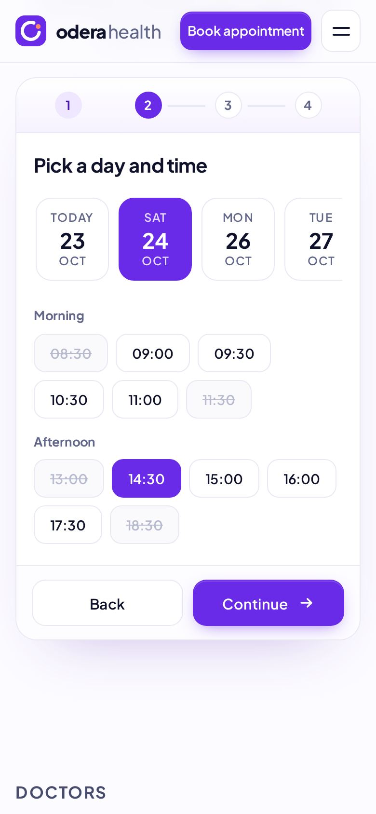
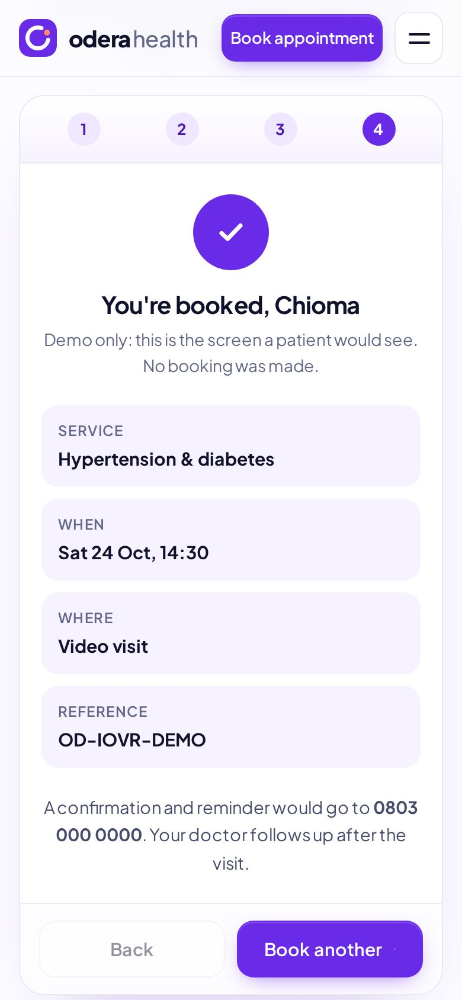

Case study · Concept project by Jola Olayemi
Odera Health: a clinic website that keeps caring after the visit
A self-initiated concept for a Lagos clinic with video consultations. The brief I set myself: make booking a doctor feel as easy as sending a message, and make trust come from clarity, not decoration.
Odera Health is fictional. It is not a real clinic, and all names, prices, addresses and phone numbers on the site are sample content.

01 · The problem
Booking care is still a phone call
For many patients in Lagos, seeing a private doctor starts with a phone call or a WhatsApp thread: is anyone free today, how much will it cost, does my HMO cover it? After the visit, the relationship usually ends at the pharmacy counter.
Clinic websites often add to the confusion. They list every department, hide prices, and treat "book" as a contact form that someone may or may not answer.
These are working assumptions for the concept, not research findings. With a real client, I would test them with patients and front-desk staff first.
02 · Goals
What the site had to do
- Book in under a minuteFrom landing to a confirmed slot in four short steps, on a phone.
- Answer the money question earlyShow prices and payment options (self-pay, HMO, plan) before booking.
- Make follow-up visibleTurn "we’ll check on you" into something a patient can see and expect.
- Feel calm and credibleInternational quality, local context, and no fake social proof.
03 · Design decisions
Five decisions that shaped it
- 01
Booking is the main character
The "Book appointment" button lives in the header, the hero and the contact card, and every service card opens the booking flow with that service already picked. A patient is never more than one tap from booking.
- 02
Four steps, one decision each
Service, then time, then details, then confirmation. Progress is always visible, taken slots are struck through instead of hidden, and personal details come last, after the patient has already got something they want.
- 03
Follow-up as a feature
Most clinic sites stop at the booking. Odera’s story is what happens after: a written plan, a follow-up date and a doctor who checks in. The message thread section shows that promise instead of describing it.
- 04
Trust without fake proof
No star ratings, no "trusted by" logos, no invented patient numbers. Trust comes from clear prices, real-looking photography, plain language, named services and an emergency notice that tells people when not to book.
- 05
Phones first
Designed at 390px first. Big tap targets, a horizontal day picker that works with a thumb, and light pages that load well on mobile data. Video visits open in the browser, so there is no app to download.
04 · Brand
An open ring and a dot
The mark is an "o" that doesn’t close. The gap stands for care that continues after checkout, and the coral dot sitting in it is the follow-up. It is drawn as simple SVG geometry so it stays crisp from a favicon to a clinic sign.
05 · Type & colour
A calm system, checked for contrast
Headings & UI · Plus Jakarta Sans
Aa
See a doctor today.
Emphasis · Instrument Serif Italic
Aa
hear from them after
#6A2BE8Primary, buttons, linksWhite text 6.7:1#4A17B0Hover, labels on tints9.3:1 on lavender#F6F2FFSection tints, chips#DCCEFFBorders on focus, map#10112AHeadings, body18.5:1 on white#474C6EBody copy8.3:1 on white#FF8A6BLogo dot only, never text#E8E9F31px card bordersContrast ratios calculated with the WCAG 2.x formula. Body text and buttons meet AA (4.5:1) or better.
06 · Mobile screens
Designed at 390px first




07 · Next steps
If this were a real client
- Usability test the booking flow with five to eight patients, including older patients booking for themselves.
- Design the HMO cover check and what happens when cover is declined.
- Add Yoruba, Igbo, Hausa and Pidgin options for key screens.
- Design the follow-up thread and reminder messages end to end with the clinical team.
Credits
Photos & fonts
The hero and how-it-works photos are free stock from Pexels, used under the Pexels License; the people in them are models, not Odera staff. The three sample doctor portraits are AI-generated and do not show real people, and the doctor names are placeholders.
- Hero: blood pressure checkPexels photo 8248293
- Sample doctor profiles 1–3AI-generated portraits (not real people)
- How it works: doctor on the phonePexels photo 19963174
- After your visit: doctor on a video callPexels photo 19957214
Fonts: Plus Jakarta Sans and Instrument Serif, both open-source under the SIL Open Font License. Logo, icons, map illustration and all copy are original to this project.